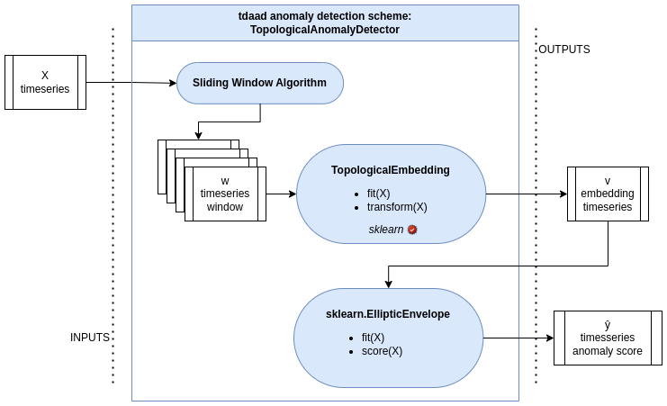

📚 Technical docs
Here is the functional diagram of the main objects of this component, as well as their technical documentation:

Functional diagram of the topological anomaly detection scheme.
- class tdaad.anomaly_detectors.TopologicalAnomalyDetector(window_size: int = 100, step: int = 5, tda_max_dim: int = 1, n_centers_by_dim: int = 5, support_fraction: float | None = None, contamination: float = 0.1, random_state: int | RandomState | None = 42)[source]
Anomaly detection for multivariate time series using topological embeddings and robust covariance estimation.
This detector extracts topological features from sliding windows of time series data and uses a robust Mahalanobis distance (via PandasEllipticEnvelope) to score anomalies.
Read more in the User Guide.
- Parameters:
window_size (int, default=100) – Sliding window size for extracting time series subsequences.
step (int, default=5) – Step size between windows.
tda_max_dim (int, default=1) – Maximum homology dimension used for topological feature extraction.
n_centers_by_dim (int, default=5) – Number of k-means centers per topological dimension (for vectorization).
support_fraction (float or None, default=None) – Proportion of data to use for robust covariance estimation. If None, computed automatically.
contamination (float, default=0.1) – Proportion of anomalies in the data, used to compute decision threshold.
random_state (int, RandomState instance, or None, default=42) – Controls randomness of the topological embedding and robust estimator.
- topological_embedding_
TopologicalEmbedding transformer object that is fitted at fit.
- Type:
object
Examples
>>> n_timestamps = 1000 >>> n_sensors = 20 >>> import pandas as pd >>> timestamps = pd.to_datetime('2024-01-01', utc=True) + pd.Timedelta(1, 'h') * np.arange(n_timestamps) >>> X = pd.DataFrame(np.random.random(size=(n_timestamps, n_sensors)), index=timestamps) >>> X.iloc[n_timestamps//2:,:10] = -X.iloc[n_timestamps//2:,10:20] >>> detector = TopologicalAnomalyDetector(n_centers_by_dim=2, tda_max_dim=1).fit(X) >>> anomaly_scores = detector.score_samples(X) >>> decision = detector.decision_function(X) >>> anomalies = detector.predict(X)
- class tdaad.topological_embedding.TopologicalEmbedding(window_size: int = 40, step: int = 5, tda_max_dim: int = 2, n_centers_by_dim: int = 5, filter_nan: bool = True, output: str = 'pandas')[source]
Topological embedding for multivariate time series using sliding windows, persistent homology (Rips), and ATOL vectorization.
- Pipeline:
Sliding windows -> similarity -> RipsPersistence -> ColumnTransformer(Atol)
- Parameters:
window_size (int) – Number of rows per sliding window.
step (int) – Step size between windows.
tda_max_dim (int) – Maximum homology dimension for RipsPersistence.
n_centers_by_dim (int) – Number of centroids per homology dimension in ATOL.
filter_nan (bool) – Whether to filter NaNs in similarity matrices.
output (str, default="pandas") – “pandas” returns a DataFrame with proper index and column names. “numpy” returns a numpy array.